Historia y sociedad
189 recursos de Historia y sociedad en español, sin preparación y con solucionario: fichas de lectura, búsquedas del tesoro y más, filtrables por grado.
189 recursos
Grado
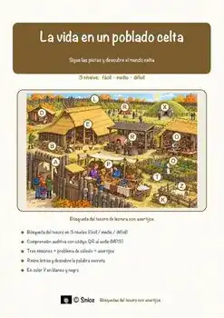
«La vida en un poblado celta» – Búsqueda del tesoro de lectura
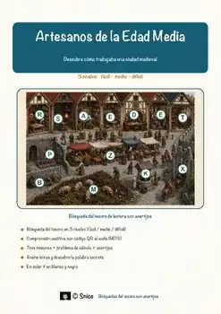
«Artesanos de la Edad Media» – Búsqueda del tesoro de lectura
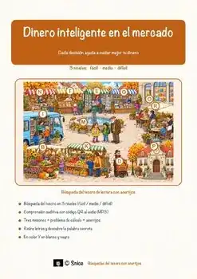
«Dinero inteligente en el mercado» – Búsqueda del tesoro de lectura
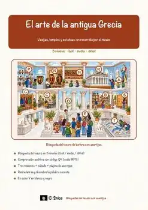
«El arte de la antigua Grecia» – Búsqueda del tesoro de lectura
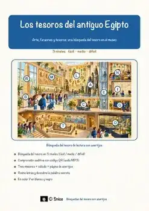
«Los tesoros del antiguo Egipto» – Búsqueda del tesoro de lectura
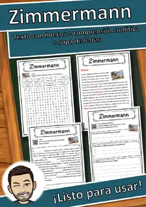
Zimmermann – Ficha de lectura: texto con huecos, comprensión auditiva y sopa de letras
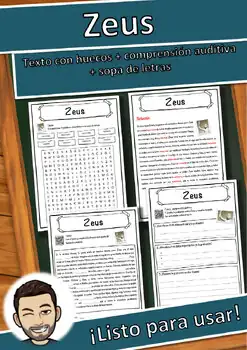
Zeus – Ficha de lectura: texto con huecos, comprensión auditiva y sopa de letras
Yoga – Ficha de lectura: texto con huecos, comprensión auditiva y sopa de letras

Weiße Frau – Ficha de lectura: texto con huecos, comprensión auditiva y sopa de letras
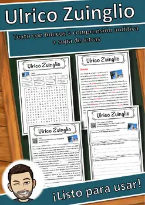
Ulrico Zuinglio – Ficha de lectura: texto con huecos, comprensión auditiva y sopa de letras
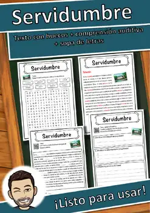
Servidumbre – Ficha de lectura: texto con huecos, comprensión auditiva y sopa de letras
República de Weimar – Ficha de lectura: texto con huecos, comprensión auditiva y sopa de letras
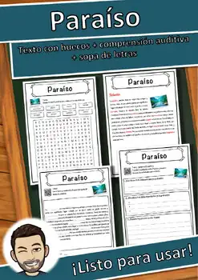
Paraíso – Ficha de lectura: texto con huecos, comprensión auditiva y sopa de letras
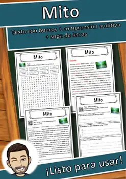
Mito – Ficha de lectura: texto con huecos, comprensión auditiva y sopa de letras
María Teresa I de Austria – Ficha de lectura: texto con huecos, comprensión auditiva y sopa de letras
Sistema de escritura – Ficha de lectura: texto con huecos, comprensión auditiva y sopa de letras
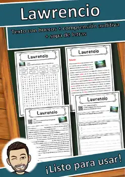
Lawrencio – Ficha de lectura: texto con huecos, comprensión auditiva y sopa de letras
Juez – Ficha de lectura: texto con huecos, comprensión auditiva y sopa de letras
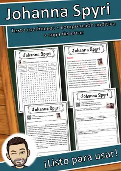
Johanna Spyri – Ficha de lectura: texto con huecos, comprensión auditiva y sopa de letras
Historiador – Ficha de lectura: texto con huecos, comprensión auditiva y sopa de letras
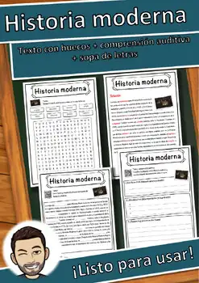
Historia moderna – Ficha de lectura: texto con huecos, comprensión auditiva y sopa de letras
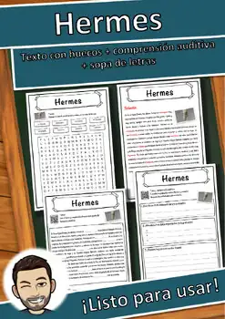
Hermes – Ficha de lectura: texto con huecos, comprensión auditiva y sopa de letras
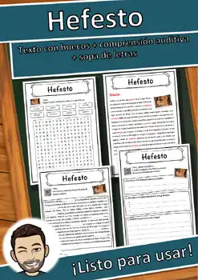
Hefesto – Ficha de lectura: texto con huecos, comprensión auditiva y sopa de letras
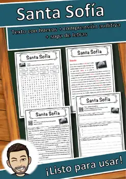
Santa Sofía – Ficha de lectura: texto con huecos, comprensión auditiva y sopa de letras
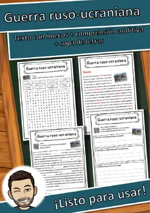
Guerra ruso-ucraniana – Ficha de lectura: texto con huecos, comprensión auditiva y sopa de letras
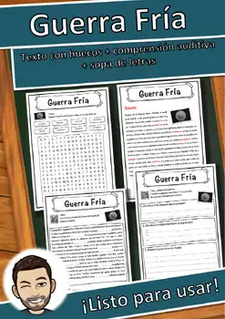
Guerra Fría – Ficha de lectura: texto con huecos, comprensión auditiva y sopa de letras
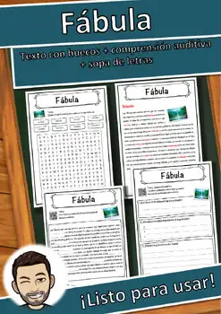
Fábula – Ficha de lectura: texto con huecos, comprensión auditiva y sopa de letras
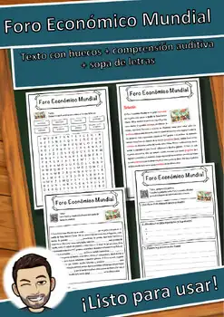
Foro Económico Mundial – Ficha de lectura: texto con huecos, comprensión auditiva y sopa de letras
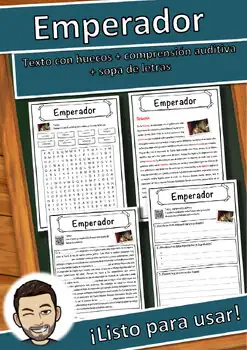
Emperador – Ficha de lectura: texto con huecos, comprensión auditiva y sopa de letras
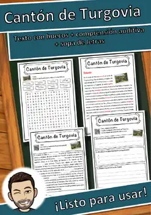
Cantón de Turgovia – Ficha de lectura: texto con huecos, comprensión auditiva y sopa de letras
Sacro Imperio Romano Germánico – Ficha de lectura: texto con huecos, comprensión auditiva y sopa de letras
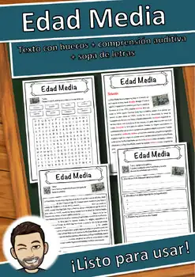
Edad Media – Ficha de lectura: texto con huecos, comprensión auditiva y sopa de letras
Rottweiler – Ficha de lectura: texto con huecos, comprensión auditiva y sopa de letras
Rey – Ficha de lectura: texto con huecos, comprensión auditiva y sopa de letras
Revolución Industrial – Ficha de lectura: texto con huecos, comprensión auditiva y sopa de letras
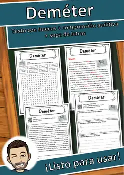
Deméter – Ficha de lectura: texto con huecos, comprensión auditiva y sopa de letras
Cuenta bancaria – Ficha de lectura: texto con huecos, comprensión auditiva y sopa de letras
Consejo Federal – Ficha de lectura: texto con huecos, comprensión auditiva y sopa de letras
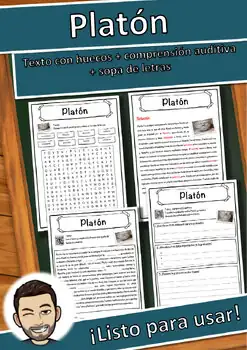
Platón – Ficha de lectura: texto con huecos, comprensión auditiva y sopa de letras
Neil Armstrong – Ficha de lectura: texto con huecos, comprensión auditiva y sopa de letras
Momia del pantano – Ficha de lectura: texto con huecos, comprensión auditiva y sopa de letras
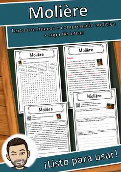
Molière – Ficha de lectura: texto con huecos, comprensión auditiva y sopa de letras
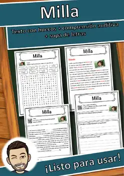
Milla – Ficha de lectura: texto con huecos, comprensión auditiva y sopa de letras
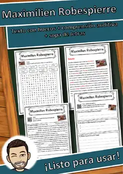
Maximilien Robespierre – Ficha de lectura: texto con huecos, comprensión auditiva y sopa de letras
Martin Luther King – Ficha de lectura: texto con huecos, comprensión auditiva y sopa de letras
Libro – Ficha de lectura: texto con huecos, comprensión auditiva y sopa de letras

Ley Fundamental para la República Federal de Alemania – Ficha de lectura: texto con huecos, comprensión auditiva y sopa de letras
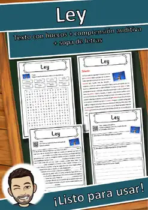
Ley – Ficha de lectura: texto con huecos, comprensión auditiva y sopa de letras
No se encontraron recursos. Prueba con otra palabra o con otro filtro.